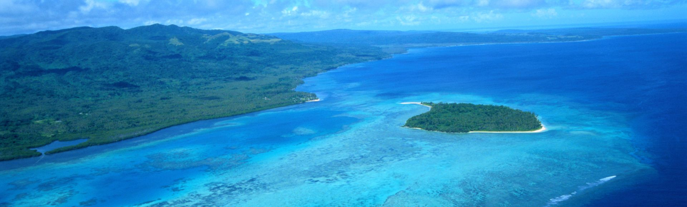

A rich culture, a vibrant landscape, and a welcoming community.

Taniti is a small, tropical island in the Pacific. While the island has an area of less than 500 square miles, the terrain is varied and includes both sandy and rocky beaches, a small but safe harbor, lush tropical rainforests, and a mountainous interior that includes a small, active volcano. Taniti has an indigenous population of about 20,000. Until a recent increase in tourism, most the Tanitian economy was dominated by fishing or agriculture.
Yes, Taniti is considered very safe, with low crime rates and a welcoming local community.
The island is warm year‑round, but most visitors prefer the dry season from May to October.
Tanitian and English are the most common languages, especially in tourist areas.
No, the island's power outlets are 120 volts (identical to the United States) so your current adapter will work just fine.
Visitors typically use shuttles, bikes, walking paths, and boat taxis to explore the island.